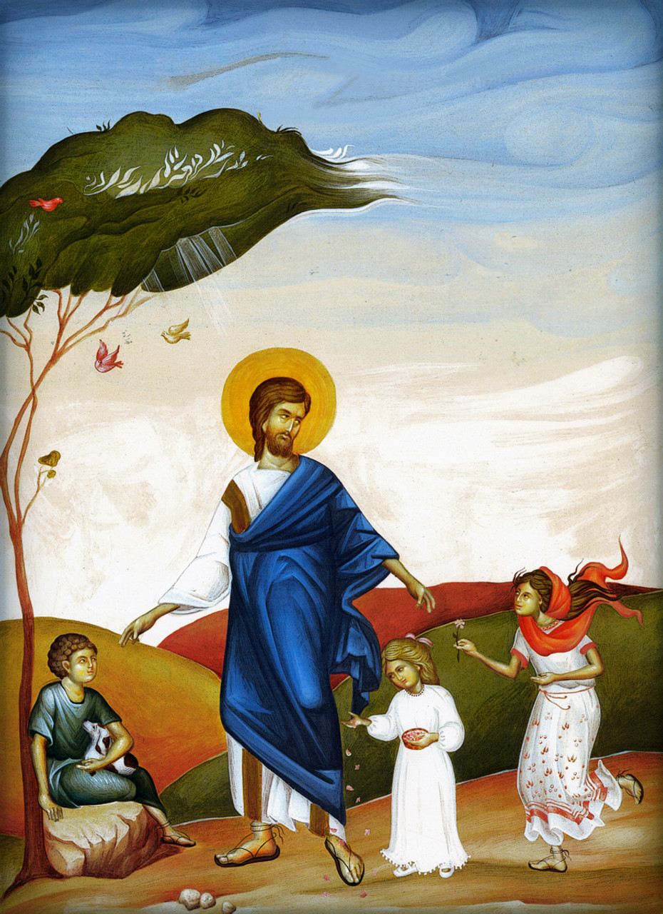
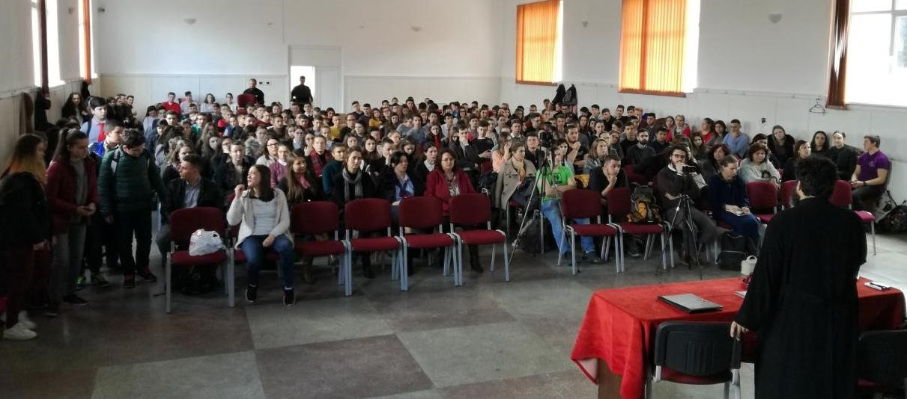

Structure
The "Path of Salvation" project was designed and carried out by a group of specialists from the
Institute for Christian-Orthodox Studies at the University of Cambridge in Great Britain The proposed topicsto be supported are the following:
- The search for faith
- God - Holy Trinity: "The Lover of People"
- To be human, fully alive. Man as the fulfillment of life
- Why did Jesus come to us?
- Salvation in Christ.
- The Holy Spirit.
- What is the church? Isn't God enough?
- Living faith. I. Divine Liturgy, a pearl of great price.
- Living the faith. II. Holy Mysteries.
- Living the faith. III. Holy Scripture, prayer and fasting.
- Christian behavior
- Heaven on earth, members of the Church and citizens of heaven.

